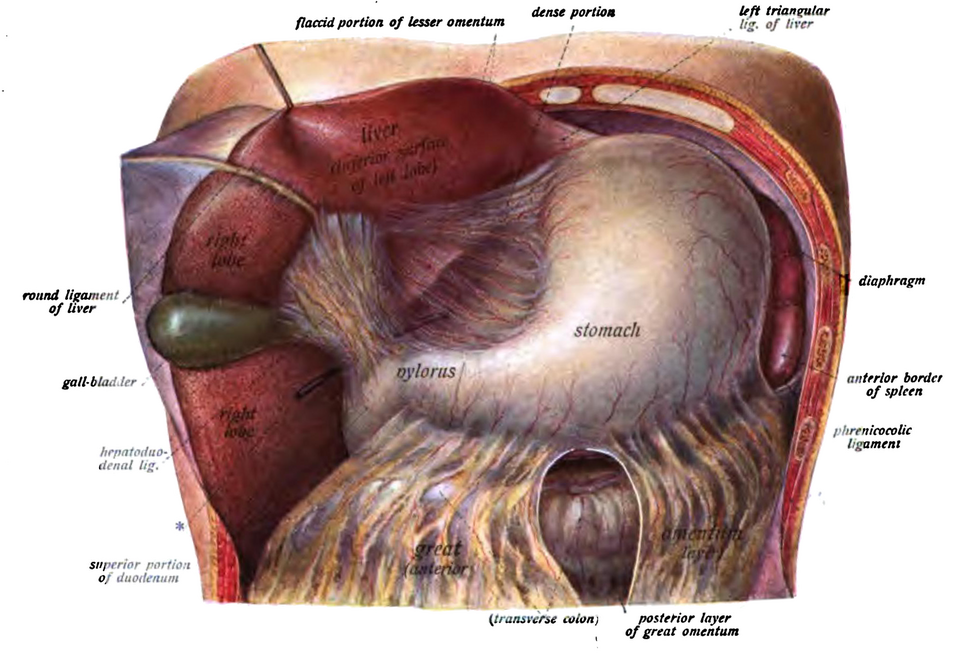
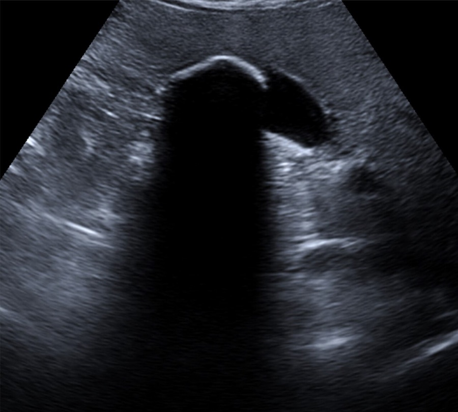
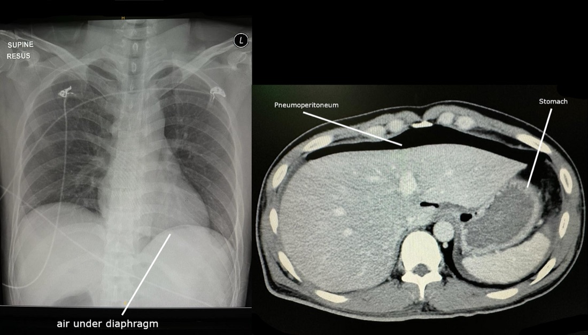
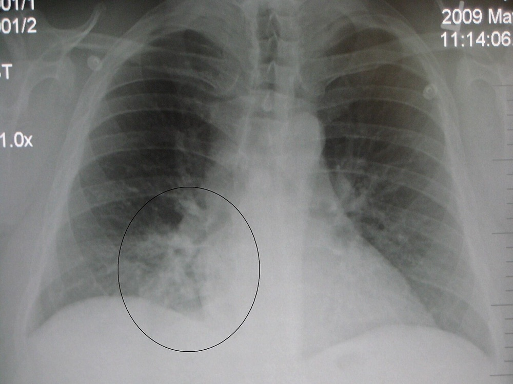
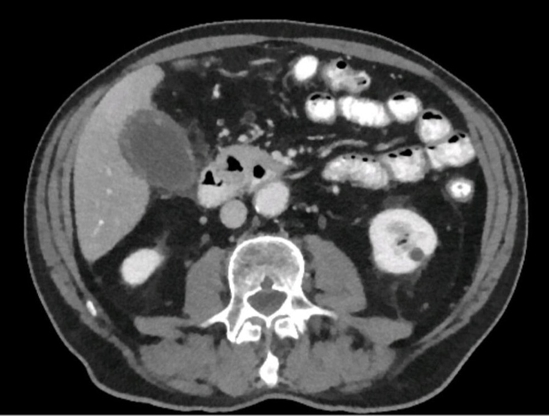

דיון מקרים: כאב בבטן הימנית העליונה
לא כל כאב מתחת לצלעות הימניות הוא כיס המרה. שלושה מטופלים בדויים: הלב, הקיבה המנוקבת וכיס המרה בלי אבנים
בסוף המפגש תדעו
- לבנות אבחנה מבדלת רחבה לכאב ברבע הימני העליון: כירורגית, רפואית, מבית החזה ומהאגן
- לקחת אנמנזה ולבצע בדיקה גופנית שלמה שמחפשת גם את מה שמחוץ לבטן
- לבחור בדיקות מעבדה והדמיה לפי האבחנה המבדלת ולא "על אוטומט"
- לזהות בטן חריפה מנקב ולהכין מטופל לניתוח דחוף
- לחשוד בדלקת של כיס המרה בלי אבנים במטופל קשה ביחידה לטיפול נמרץ
השכנים של כיס המרה

👆 לחצו על אזור בציור כדי לקרוא עליו
הקרקעית בולטת מתחת לשפת הכבד. כאב בילארי ודלקת חריפה. במטופל קשה גם דלקת בלי אבנים. כאן בודקים סימן מרפי
אבצס בכבד נמצא ברשימת הסיבות הכירורגיות לבטן חריפה. בשולי הכבד עובר הליגמנט הכבדי-תריסריוני עם צינור המרה: אבן בצינור ודלקת של דרכי המרה
כיב מנוקב בקיבה או בתריסריון: כאב פתאומי וחזק עם סימני צפקת. לכן מחפשים אוויר חופשי. כיב, גסטריטיס ואפילו קוליטיס יכולים לחקות דלקת בכיס המרה
כאב אפיגסטרי. מאחוריה הלבלב: דלקת לבלב (ליפאז מעל פי 3 מהנורמה). אוטם בדופן התחתונה של הלב יכול להתבטא בכאב בבטן העליונה
מעליה בסיסי הריאות: דלקת ריאות באונה התחתונה הימנית גורמת לכאב ברבע הימני העליון. גירוי של הסרעפת (אוויר חופשי, דם) מוקרן לכתף דרך העצב הפרני
מתחת לכבד נמצאת הכפיפה הכבדית של המעי הגס. גם כליה ימנית (אבן, פיילונפריטיס) ותוספתן גבוה בהיריון יכולים לכאוב באזור
איברי הבטן העליונה במבט מלפנים, הכבד מורם · Sobotta, Atlas and Text-book of Human Anatomy (1906), איור 405 (נחלת הכלל)
הרשימה שצריך לעבור עליה
- כאב בילארי
- דלקת חריפה של כיס המרה, עם או בלי אבנים
- אבן בצינור המשותף, דלקת של דרכי המרה
- כיב מנוקב בקיבה או בתריסריון
- דלקת לבלב
- אבצס בכבד
- תוספתן (במיוחד בהיריון)
- אוטם שריר הלב
- דלקת ריאות באונה התחתונה
- תסחיף ריאתי
- אבן בכליה
- פיילונפריטיס
- אבצס בכליה
- חמצת קטוטית סוכרתית
- משבר של אנמיה חרמשית
- הרפס זוסטר
- תסמונת HELLP
- דלקת תוספתן או כיס מרה. הרחם המוגדל מזיז את מקום הכאב
בודקים את כל המטופל, לא רק את הבטן
- הכאב: מתי התחיל, איך, איפה, אופי ומשך. כאב קרביים עמום ומפוזר. כאב מהצפק הפריאטלי חד וממוקם
- הקרנה: כאב בכתף יכול לבוא מגירוי של הסרעפת. וההפך: אוטם בלב יכול להופיע ככאב בבטן העליונה
- רקע: כלי דם ועישון, ניתוחים, תרופות (סטרואידים מסתירים סימנים), נוגדי קרישה. באישה: וסת, היריון
- בדיקה: הסתכלות, הקשה ואז מישוש, מהמקום הלא כואב. רגליים מכופפות כדי להרפות את הבטן. מחפשים התגוננות לא רצונית, נוקשות ורגישות בשחרור
- כאב לא פרופורציונלי לבדיקה: לחשוב על איסכמיה
- מחוץ לבטן: דופק מהיר, הזעה, נשימה מאומצת, הלב והריאות, המפשעות
- האזנה לבטן כמעט לא עוזרת לאבחנה

"יש לו אבנים. מזמינים כירורג"
- האבנים מסבירות את התמונה?
- מה חייבים לשלול לפני שממשיכים?
- אילו בדיקות פשוטות עושים עכשיו?

האבנים היו שם קודם
האבנים מסבירות?
- רוב האבנים שקטות ומתגלות במקרה בהדמיה. 10% עד 15% מהאוכלוסייה עם אבנים
- אין חום, אין מרפי, אין דופן מעובה או נוזל. בכאב בילארי בלי דלקת אין מרפי
- אבן באולטרסאונד היא ממצא, לא בהכרח האבחנה
מה חייבים לשלול?
- אוטם בשריר הלב יכול להופיע ככאב בבטן העליונה
- בכאב אפיגסטרי: קולות לב רחוקים ופחות כניסת אוויר בבסיסי הריאות מכוונים לתסמונת כלילית חריפה
- מטופל עם מחלת כלי דם ומעשן: גם מפרצת באבי העורקים ואיסכמיה של המעי בראש הרשימה
הבדיקות עכשיו
- א״ק״ג וצילום חזה: פשוטים וזמינים מיד
- ספירת דם, אלקטרוליטים ולקטט לכל כאב בטן חריף. ליפאז ותפקודי כבד לפי החשד
כאב שהתחיל ברגע אחד
- מה מסביר את הכאב בכתף?
- איזה צילום פשוט עוזר כאן?
- מה ההכנה לחדר ניתוח?

ניקוב: מאבחנה לחדר ניתוח
הכתף והבטן
- אוויר חופשי מגרה את הסרעפת. העצב הפרני מוקרן לכתף
- צפקת: התגוננות לא רצונית, נוקשות ורגישות בשחרור, מגירוי של הצפק הפריאטלי
- החשד: כיב מנוקב בקיבה או בתריסריון
ההדמיה
- צילום בעמידה: אוויר מתחת לסרעפת. זמין מהר ומקדים את הייעוץ הכירורגי
- CT עם חומר ניגוד לווריד: הכלי העיקרי בבטן חריפה. בלי חומר ניגוד הדיוק יורד בכ-30%
- חומר ניגוד דרך הפה כמעט לא צריך, חוץ מחשד לניקוב או לדליפה. דליפה שלו סגולית אבל לא רגישה
ההכנה לניתוח
כשהבעיה מעל הסרעפת או מתחת לכליה
- דלקת ריאות באונה התחתונה הימנית: כאב ברבע הימני העליון עם חום, שיעול ונשימה מאומצת. צילום חזה מבדיל. זה אחד התפקידים המעטים שנשארו לצילום הבטן והחזה במחלות כיס המרה
- פיילונפריטיס ואבן בכליה: בדיקת שתן
- דלקת לבלב: ליפאז מעל פי 3 מהנורמה. כאב אפיגסטרי בבדיקה מעלה חשד
- אישה בגיל הפוריות: β-hCG תמיד. בהיריון מעדיפים אולטרסאונד ו-MRI. אם צריך CT בשביל האם, עושים אותו: כ-25 מיליגריי לעובר. עד 50 מיליגריי הסיכון נמוך
- חמצת קטוטית סוכרתית: מטופל שהפסיק אינסולין

חום בלי מקור
- מה האבחנה?
- ניתוח או ניקוז?
- מתי משנים תוכנית?

דלקת של כיס המרה בלי אבנים
האבחנה
- כנראה סטזיס של מרה, התרחבות, דלקת ואז זיהום ונמק
- גורמי סיכון: גיל מבוגר, כוויות וחבלה, הזנה תוך-ורידית ממושכת, מחלה קשה, דיכוי חיסון, סוכרת
- יכולה להיות סוערת יותר מדלקת עם אבנים ולהגיע לנמק
- לעיתים בלי כאב ובלי סימנים: חום בלי מקור עם דופן מעובה ונוזל סביב כיס המרה צריך להדליק נורה
- מיפוי HIDA מאבחן, אבל יכול להיות חיובי כוזב
הטיפול
- כריתה מרפאת, אבל רבים מהמטופלים האלה לא יעמדו בניתוח
- נקז מלעורי לכיס המרה בהנחיית הדמיה: הדרך הבטוחה. יותר מ-90% משתפרים
- כריתה מאוחרת רק אם ההדמיה בהמשך עדיין לא תקינה
- לא השתפר תוך 24 שעות? לשקול ניתוח וכריתה. כנראה יש ניקוב והנקז לא מספיק
מה מזמינים ולמה
מחקרים שכדאי להכיר
כאב בלי סיבה ידועה: אולטרסאונד או CT עם חומר ניגוד. חשד למחלה בדרכי המרה: אולטרסאונד. אולטרסאונד שלילי עם חום ולויקוציטוזיס: MRI עם MRCP, מיפוי או CT. חשד לדלקת בלי אבנים: מיפוי
Russo GK, Zaheer A, Kamel IR, et al. J Am Coll Radiol 2023;20(5S):S211-S22310 מחקרים, 2,356 מטופלים. לדלקת חריפה של כיס המרה: רגישות 70.9% וסגוליות 94.4%. בדיקה חיובית עוזרת לאשר. בדיקה שלילית לא שוללת
Wilson SJ, Thavanathan R, Cheng W, et al. Ann Emerg Med 2024;83(3):235-24629 מחקרים, 5,311 מטופלים (4 מחקרים אקראיים). בתיקון הלפרוסקופי פחות תמותה ב-30 יום (OR 0.57), פחות סיבוכים, פחות זיהומי פצע ואשפוז קצר בכ-3 ימים
Chan KS, Ng STC, Tan CHB, et al. J Trauma Acute Care Surg 2023;94(1):e1-e13432 מטופלים מ-42 מוסדות, 7% מכל הדלקות החריפות. תמותה בבית החולים 2.5%. גורם הסיכון היחיד לתמותה: אוטם או אי ספיקת לב. כריתה, בעיקר לפרוסקופית, נתנה תוצאות טובות יותר
Morikawa T, Akada M, Shimizu K, et al. J Hepatobiliary Pancreat Sci 2024;31(3):162-172חמישה דברים לקחת למחלקה
- כאב ברבע הימני העליון: דרכי המרה בראש הרשימה, אבל לא לבד. לב, ריאה, כליה, לבלב, כיב והיריון
- אבנים באולטרסאונד הן ממצא שכיח. בלי חום, מרפי ודופן מעובה הן לא בהכרח האבחנה
- בודקים את כל המטופל: לב, ריאות, מפשעות. א״ק״ג וצילום חזה זולים ומהירים
- כאב פתאומי, בטן קשה וכאב בכתף: ניקוב. צילום בעמידה, החייאה, אנטיביוטיקה וחדר ניתוח
- מטופל קשה בטיפול נמרץ עם חום בלי מקור: לחשוב על דלקת בלי אבנים ולנקז